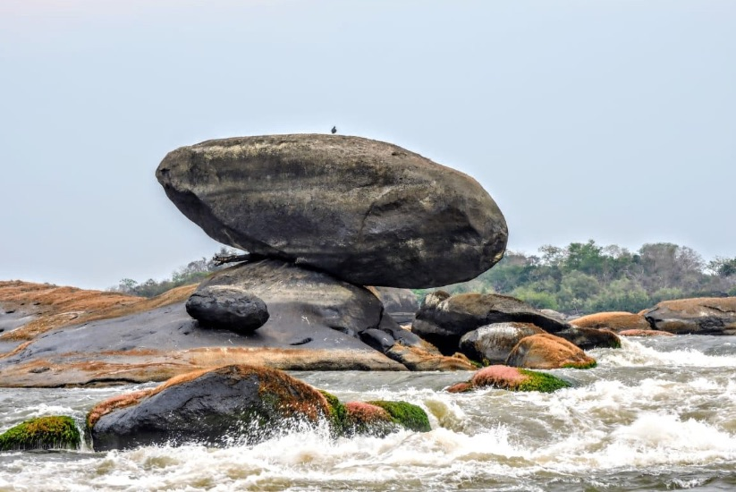

1. Cascada Fin del Mundo, Putumayo

En medio de las selvas del país de la belleza, en el Macizo Colombiano, se encuentra la asombrosa cascada El Fin del Mundo. Se trata de una maravilla natural de 75 metros que resalta la diversidad de la selva de Mocoa, Putumayo. Sin duda alguna, es un lugar para visitar en Colombia donde se pueden explorar selvas, imponentes montañas y la enorme biodiversidad de la región.
2. Parque Nacional Natural El Tuparro, Vichada
El Parque Nacional El Tuparro es una reserva natural de gran extensión, considerada como un gran tesoro del Vichada. Sus inmensas planicies verdes rodeadas por grandes ríos logran cautivar a sus visitantes. Además, es un santuario de aves, orquídeas, monos y serpientes. que, si buscas ecoturismo en Colombia, en el Parque Nacional el Tuparro puedes recorrer caminos naturales y asombrarte con los maravillosos paisajes de este sitio.
3. Reserva Río Claro, Antioquia

A tres horas de la capital antioqueña se encuentra Río Claro, una hermosa reserva donde se observa el paso del agua en medio de un cañón con hermosas formaciones en mármol. En este lugar se pueden hacer actividades como rafting, canopy, exploración en cavernas y avistamiento de aves. Si amas la naturaleza, el aire libre, los ríos y estás buscando lugares para visitar en Colombia que despierten tus sentidos, la Reserva Río Claro es la opción ideal.
4. Cerro Azul, Guaviare

A 47 kilómetros de San José del Guaviare, está ubicado Cerro Azul, un lugar fascinante que combina exploración, historia y misterio. Visitar este cerro significa ser testigo de una maravillosa ilustración del patrimonio cultural e histórico en América Latina y, en particular, de la Amazonía-Orinoquía Colombiana ¡Descubre diversas pinturas rupestres y contágiate de historia!
5. Puerto Nariño, AmazonasSerie favorita

A orillas del río Loretoyacu se encuentra Puerto Nariño, un rincón apacible que sumerge a sus visitantes en una incomparable atmósfera de selva tropical colombiana. Sin duda alguna, es un lugar maravilloso del mundo donde puedes remar en las aguas del lago Tarapoto, atravesar la jungla y deleitarte con platos típicos de la región. ¡No dejes de conocerlo!